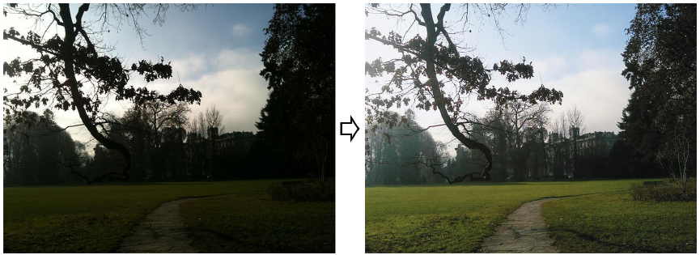
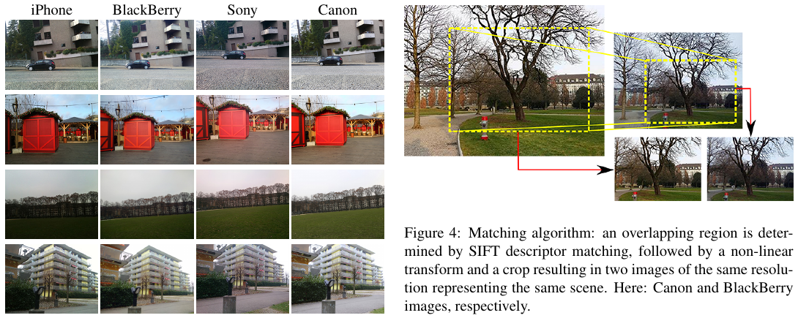
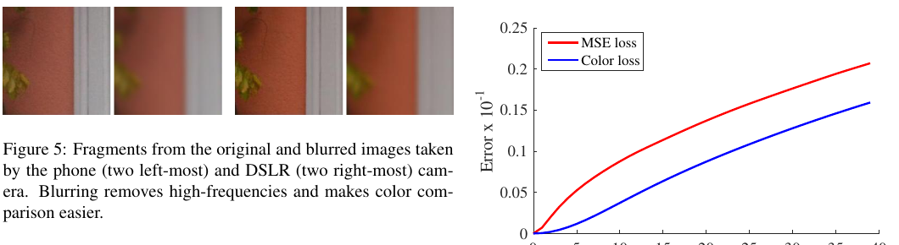
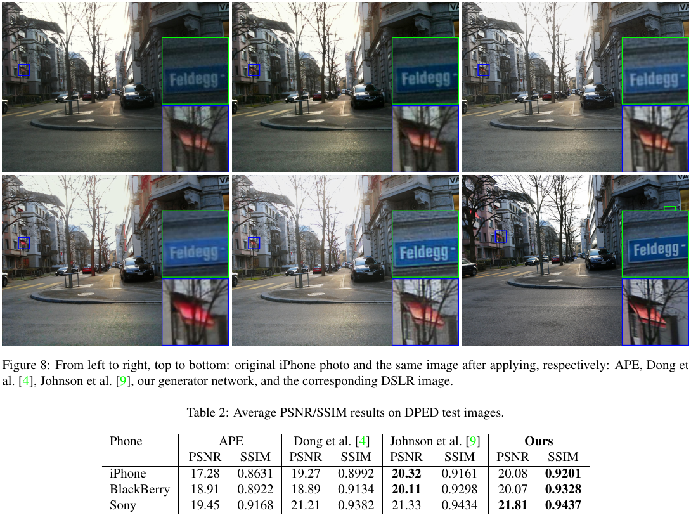
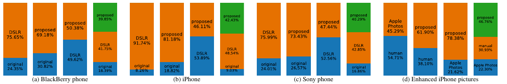
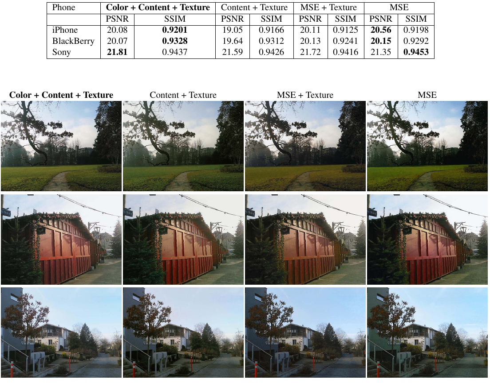
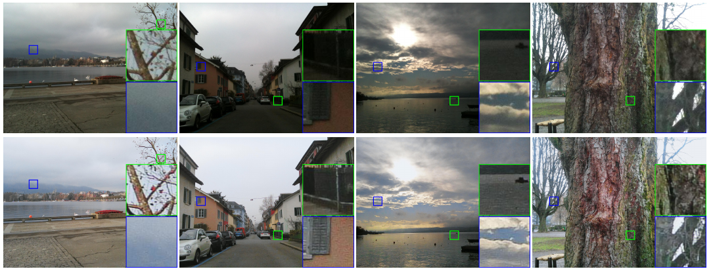

DSLR-Quality Photos on Mobile Devices with Deep Convolutional Networks

专项定位：本页属于专项「手机照片 → 相机画质：细节与质感迁移」。读者的目标是从 iPhone（优先 Bayer RAW）出发，把整体细节与质感变成某台目标相机的样子；已有的设计思路是：颜色用物理方法（DNG 色彩矩阵 / 色卡）对齐，生成模型只补高频纹理，多帧合成提供真实信息。DPED 是这条线上第一篇把「手机 → 单反」作为配对监督任务认真做出来的工作，下文 §5 和 §6 会对照这个目标逐条说它能借什么、缺什么。
1. 出发点 (Motivation)
1.1 问题：手机和单反的差距不是一种退化
手机相机的劣势来自物理：传感器小、镜头小、没有专用硬件。结果是分辨率、色彩还原、噪声都比单反差。论文的观察是，这些差距同时存在，且彼此纠缠：锐度、纹理细节、细微的颜色变化在传感器层面就已经丢了。所以：
- 不能靠手调规则：现有自动增强工具大多只调全局参数（对比度、亮度），不管纹理和语义 [§1]。
- 不能靠人造退化：把单反图人为劣化再训练「去劣化」，只有在能准确建模真实退化时才能泛化；而手机的退化是光学、传感器、ISP、压缩叠加出来的，建模它「is infeasible」[§1.2]。
于是作者换了个思路：不建模退化，直接学两个真实分布之间的翻译。输入分布由某台手机的成像链定义，目标分布由单反定义，用同一时刻、同一场景的配对照片监督。
1.2 两个随之而来的难点
- 数据：需要大量同步拍摄、可对齐的「手机 / 单反」配对。这就是 DPED 数据集。
- 损失：两台相机的光学畸变不同，即便精确配准后像素之间仍有非恒定的错位（论文说 patch 级错位 ≤5 px）[§2, §3.1]。逐像素 MSE 在这种条件下既不可靠，也不是好的感知指标。所以每一项损失都必须对小错位不敏感。
DSLR / 单反
可换镜头的大画幅相机；本文目标机是 Canon 70D（20 MP APS-C）。
ISP
相机内把传感器 RAW 数据变成 JPEG 的流水线（去马赛克、降噪、白平衡、调色、锐化、压缩）。DPED 的输入是 ISP 已经处理完的 JPEG。
SIFT + RANSAC 单应
先找两张图中的同名特征点，再用抗外点的方式拟合一个平面投影变换，把两张图对齐。
Content loss (VGG)
不比像素，比两张图送进预训练 VGG-19 后某层特征的差异，衡量「内容/语义是否一致」。
判别器 / 对抗损失
另训一个网络判断「这张是真单反图还是网络生成的」；生成器的目标是骗过它。本文用它来定义纹理质量。
TV loss
全变分：相邻像素差的大小，惩罚它可以压掉椒盐噪声。
PSNR / SSIM
有参考的保真度指标：PSNR 看像素误差，SSIM 看局部结构相似度。对配对错位都很敏感。
APE
Apple Photo Enhancer，苹果「照片」应用里的一键自动增强，作为商业基线。
2. 方法 (Method)
2.1 数据：同步拍摄 + 两级对齐

四台设备装在同一个三脚架上（论文 Fig. 2），无线遥控同时触发，3 周里在白天各种场景、光照、天气下拍了 22K+ 张：Sony 4549、iPhone 5727、Canon 与 BlackBerry 各 6015 张，全部自动模式、默认设置 [§2]。
对齐分两级：
- 整图级：SIFT 关键点匹配 + RANSAC 单应，裁到交集，再把单反裁片下采样到手机裁片的尺寸 [§2 Matching algorithm]。
- patch 级：以非重叠滑窗同时在两张图上切 100×100 patch，手机侧窗口位置再按互相关做平移和旋转微调，只保留互相关 > 0.9 的 patch [§2]。
最终得到 BlackBerry / iPhone / Sony 对 Canon 分别 139K / 160K / 162K 训练 patch、2.4–4.3K 测试 patch，每对 patch 的残余错位不超过 5 px [§2]。
一个容易忽略的细节：单反裁片被缩小到手机分辨率。所以目标图每个像素背后是单反更大的传感器面积、更好的镜头，目标是「同分辨率下单反的画质」，不涉及超分。
2.2 总目标：一个函数，拟合配对分布
—— 翻译：$I_s$ 是手机拍的 patch，$I_t$ 是同一时刻单反拍的 patch，$F_{\mathbf{W}}$ 是要学的翻译网络。找一组参数，让「翻译后的手机图」和「单反图」在损失 $\mathcal{L}$ 下平均最接近。整篇论文的关键都在 $\mathcal{L}$ 怎么设计。
作者的假设是：感知画质可以拆成颜色、纹理、内容三个独立部分，每部分单独设计一个对小错位不敏感的损失 [§3.1]。
2.3 颜色损失：先模糊，再比
—— 翻译：先用一个固定的高斯核把两张图都糊掉，糊到纹理和细节都看不见，只剩亮度、对比度和大块颜色，再算均方差。因为图已经糊了，错开一两个像素几乎不改变糊后的结果，所以这个损失对错位不敏感。
打个比方：两个人站在略微不同的位置给同一面墙拍照，你眯起眼睛看两张照片，只比「墙是什么颜色、亮不亮」，不去管砖缝对不对得上。眯眼就是高斯模糊。
Fig. 6 量化了这一点：把一张图平移 n 像素后和原图比，n ≤ 2 时颜色损失几乎为 0；n 在 3–5 px（正好是 DPED 的残余错位范围）时仍比 MSE 小 5–10 倍 [§3.1.1]。

代码里，高斯核由 gauss_kernel 生成、blur 以 depthwise 卷积作用于 RGB 三通道：
repo/utils.py:L20-L34 — 颜色损失用的高斯核与模糊算子（论文 Eq. 3–4）
def gauss_kernel(kernlen=21, nsig=3, channels=1):
interval = (2*nsig+1.)/(kernlen)
x = np.linspace(-nsig-interval/2., nsig+interval/2., kernlen+1)
kern1d = np.diff(st.norm.cdf(x))
kernel_raw = np.sqrt(np.outer(kern1d, kern1d))
kernel = kernel_raw/kernel_raw.sum()
out_filter = np.array(kernel, dtype = np.float32)
out_filter = out_filter.reshape((kernlen, kernlen, 1, 1))
out_filter = np.repeat(out_filter, channels, axis = 2)
return out_filter
def blur(x):
kernel_var = gauss_kernel(21, 3, 3)
return tf.nn.depthwise_conv2d(x, kernel_var, [1, 1, 1, 1], padding='SAME')
注意 kernel_raw = np.sqrt(np.outer(...)) 这一行：对两个一维高斯的外积开根号，等于把方差翻倍。我用纯 Python 复算：一维核的像素标准差约 3.3 px，开根号后的二维核约 4.3 px。论文 Eq. 4 写的却是分母 \(2\sigma\)（不是 \(2\sigma^2\)）、\(A=0.053\)，而 \(0.053 \approx 1/(2\pi\cdot 3)\)，按字面理解是「方差 3、标准差约 1.73 px」。论文和代码的模糊半径差了约 2.5 倍，详见 §4。
2.4 纹理损失：只看灰度的判别器
—— 翻译：$D$ 是一个判别器，输出「这张图是真单反拍的」的概率。生成器希望自己的输出被 $D$ 判成真，所以最小化 $-\log D$。关键在于判别器只看灰度图，颜色信息被拿掉了，它只能靠纹理、锐度、噪声形态来分辨真假。
这一项的思路是：纹理质量很难手写公式，那就学一个。判别器看不到颜色，就只能比高频结构，于是这个损失只负责纹理；判别器又只做整体真假判断、不做逐像素比较，所以天然不需要对齐 [§3.1.2]。
代码实现很紧凑：用一个 0/1 开关 adv_ 决定每个样本送进判别器的是增强图还是单反图（都先转灰度）：
repo/train_model.py:L48-L66 — 灰度化 + 随机交换真假 + 判别器交叉熵与纹理损失（论文 Eq. 5）
# transform both dslr and enhanced images to grayscale
enhanced_gray = tf.reshape(tf.image.rgb_to_grayscale(enhanced), [-1, PATCH_WIDTH * PATCH_HEIGHT])
dslr_gray = tf.reshape(tf.image.rgb_to_grayscale(dslr_image),[-1, PATCH_WIDTH * PATCH_HEIGHT])
# push randomly the enhanced or dslr image to an adversarial CNN-discriminator
adversarial_ = tf.multiply(enhanced_gray, 1 - adv_) + tf.multiply(dslr_gray, adv_)
adversarial_image = tf.reshape(adversarial_, [-1, PATCH_HEIGHT, PATCH_WIDTH, 1])
discrim_predictions = models.adversarial(adversarial_image)
# losses
# 1) texture (adversarial) loss
discrim_target = tf.concat([adv_, 1 - adv_], 1)
loss_discrim = -tf.reduce_sum(discrim_target * tf.compat.v1.log(tf.clip_by_value(discrim_predictions, 1e-10, 1.0)))
loss_texture = -loss_discrim
loss_texture = -loss_discrim 是本页最值得注意的一行。生成器步里 adv_ 全是 0（见 §2.7），此时判别器输入全是增强图，目标是 [0, 1]，于是 loss_discrim = -Σ log p₁（\(p_1\) = 判为「增强图」的概率），而 loss_texture = Σ log p₁ = Σ log(1 − D)。这是 GAN 原始 minimax 的饱和式生成器目标，不是论文 Eq. 5 写的非饱和 \(-\log D\)。
2.5 内容损失与 TV 损失
—— 翻译：$\psi_j$ 是 VGG-19 第 $j$ 层（本文用 relu5_4，很深的一层）的特征图。两张图在这一层的特征越接近，说明「画的是同样的东西」。除以 $C_jH_jW_j$ 是对特征图大小做归一化。relu5_4 的感受野很大，几个像素的错位对它几乎没影响。
—— 翻译：输出图横向、纵向相邻像素差的大小。惩罚它会让图更平滑，主要用来抹掉椒盐状的孤立噪点。论文说权重很小，不会伤害高频。
内容损失的作用是「保语义」：颜色损失不看细节，纹理损失不看颜色、也不看具体画了什么，需要有一项保证输出和输入是同一个场景 [§3.1.3]。
2.6 总损失与网络结构
—— 翻译：四项加权求和，权重是作者在 DPED 训练集上的初步实验里调出来的。数值本身没有物理意义，因为各项的量纲和归一化方式都不同；代码里的实际权重也不是这组（见 §4）。
代码把四项损失放在一起，和论文公式逐项对应：
repo/train_model.py:L71-L99 — VGG 内容损失、模糊颜色损失、TV 损失与加权总损失（论文 Eq. 2/6/7/8）
# 2) content loss
CONTENT_LAYER = 'relu5_4'
enhanced_vgg = vgg.net(vgg_dir, vgg.preprocess(enhanced * 255))
dslr_vgg = vgg.net(vgg_dir, vgg.preprocess(dslr_image * 255))
content_size = utils._tensor_size(dslr_vgg[CONTENT_LAYER]) * batch_size
loss_content = 2 * tf.nn.l2_loss(enhanced_vgg[CONTENT_LAYER] - dslr_vgg[CONTENT_LAYER]) / content_size
# 3) color loss
enhanced_blur = utils.blur(enhanced)
dslr_blur = utils.blur(dslr_image)
loss_color = tf.reduce_sum(tf.pow(dslr_blur - enhanced_blur, 2))/(2 * batch_size)
# 4) total variation loss
batch_shape = (batch_size, PATCH_WIDTH, PATCH_HEIGHT, 3)
tv_y_size = utils._tensor_size(enhanced[:,1:,:,:])
tv_x_size = utils._tensor_size(enhanced[:,:,1:,:])
y_tv = tf.nn.l2_loss(enhanced[:,1:,:,:] - enhanced[:,:batch_shape[1]-1,:,:])
x_tv = tf.nn.l2_loss(enhanced[:,:,1:,:] - enhanced[:,:,:batch_shape[2]-1,:])
loss_tv = 2 * (x_tv/tv_x_size + y_tv/tv_y_size) / batch_size
# final loss
loss_generator = w_content * loss_content + w_texture * loss_texture + w_color * loss_color + w_tv * loss_tv
tf.nn.l2_loss(t) 等于 sum(t**2)/2，所以 2 * l2_loss / size 就是平方误差的均值。也就是说代码里内容损失和 TV 损失都是平方范数的均值，论文 Eq. 6/7 写的是不带平方的范数。颜色损失则是在 patch 内求和（reduce_sum / (2*batch)），没有按像素数归一化，单个样本里有 3×10⁴ 个元素，所以它的量级远大于其他项。

生成器是全卷积、全程 64 通道、不做下采样，所以训练用 100×100 patch，推理可以直接吃整张图（test_model.py 默认按原分辨率处理）。代码开头一段：
repo/models.py:L4-L17 — 生成器入口：9×9 卷积 + 第一个残差块（instance norm）
def resnet(input_image):
with tf.compat.v1.variable_scope("generator"):
W1 = weight_variable([9, 9, 3, 64], name="W1"); b1 = bias_variable([64], name="b1");
c1 = tf.nn.relu(conv2d(input_image, W1) + b1)
# residual 1
W2 = weight_variable([3, 3, 64, 64], name="W2"); b2 = bias_variable([64], name="b2");
c2 = tf.nn.relu(_instance_norm(conv2d(c1, W2) + b2))
W3 = weight_variable([3, 3, 64, 64], name="W3"); b3 = bias_variable([64], name="b3");
c3 = tf.nn.relu(_instance_norm(conv2d(c2, W3) + b3)) + c1
输出层和判别器：
repo/models.py:L51-L82 — 缩放 tanh 输出层与灰度判别器（论文 §3.2）
# Final
W12 = weight_variable([9, 9, 64, 3], name="W12"); b12 = bias_variable([3], name="b12");
enhanced = tf.nn.tanh(conv2d(c11, W12) + b12) * 0.58 + 0.5
return enhanced
def adversarial(image_):
with tf.compat.v1.variable_scope("discriminator"):
conv1 = _conv_layer(image_, 48, 11, 4, batch_nn = False)
conv2 = _conv_layer(conv1, 128, 5, 2)
conv3 = _conv_layer(conv2, 192, 3, 1)
conv4 = _conv_layer(conv3, 192, 3, 1)
conv5 = _conv_layer(conv4, 128, 3, 2)
flat_size = 128 * 7 * 7
conv5_flat = tf.reshape(conv5, [-1, flat_size])
W_fc = tf.Variable(tf.compat.v1.truncated_normal([flat_size, 1024], stddev=0.01))
bias_fc = tf.Variable(tf.constant(0.01, shape=[1024]))
fc = leaky_relu(tf.matmul(conv5_flat, W_fc) + bias_fc)
W_out = tf.Variable(tf.compat.v1.truncated_normal([1024, 2], stddev=0.01))
bias_out = tf.Variable(tf.constant(0.01, shape=[2]))
adv_out = tf.nn.softmax(tf.matmul(fc, W_out) + bias_out)
return adv_out
两个细节：
tanh(·) * 0.58 + 0.5把输出范围定在 [−0.08, 1.08]，比 [0, 1] 略宽，留出一点过冲空间，避免高光和暗部在 tanh 饱和区梯度消失。- 判别器的
flat_size = 128 * 7 * 7是写死的：100 → 25（步长 4）→ 13（步长 2）→ 13 → 13 → 7（步长 2）。所以判别器只能吃 100×100 的输入，这也是 patch 尺寸在代码里没法随便改的原因之一。
2.7 训练：生成器与判别器交替一步
repo/train_model.py:L145-L170 — 交替训练：生成器步 adv_=0，判别器步随机交换真假
for i in range(num_train_iters):
# train generator
idx_train = np.random.randint(0, train_size, batch_size)
phone_images = train_data[idx_train]
dslr_images = train_answ[idx_train]
[loss_temp, temp] = sess.run([loss_generator, train_step_gen],
feed_dict={phone_: phone_images, dslr_: dslr_images, adv_: all_zeros})
train_loss_gen += loss_temp / eval_step
# train discriminator
idx_train = np.random.randint(0, train_size, batch_size)
# generate image swaps (dslr or enhanced) for discriminator
swaps = np.reshape(np.random.randint(0, 2, batch_size), [batch_size, 1])
phone_images = train_data[idx_train]
dslr_images = train_answ[idx_train]
[accuracy_temp, temp] = sess.run([discim_accuracy, train_step_disc],
feed_dict={phone_: phone_images, dslr_: dslr_images, adv_: swaps})
train_acc_discrim += accuracy_temp / eval_step
生成器和判别器各用一个独立采样的 batch，1:1 交替。判别器步里每个样本以 50% 概率看真单反图、50% 看增强图，所以它在 batch 内是「一半真一半假」，不是传统 GAN 那样真假各一整个 batch。
3. 结论 (Key findings)
3.1 有参考指标：SSIM 全胜，PSNR 与 Johnson 持平

| 手机 | 原图 → APE | Dong et al. | Johnson et al. | DPED |
|---|---|---|---|---|
| iPhone | 17.28 / 0.8631 | 19.27 / 0.8992 | 20.32 / 0.9161 | 20.08 / 0.9201 |
| BlackBerry | 18.91 / 0.8922 | 18.89 / 0.9134 | 20.11 / 0.9298 | 20.07 / 0.9328 |
| Sony | 19.45 / 0.9168 | 21.21 / 0.9382 | 21.33 / 0.9434 | 21.81 / 0.9437 |
（PSNR dB / SSIM，数据来自论文 Table 2）
- DPED 在三台手机上 SSIM 都是第一，但领先幅度很小（对 Johnson 只多 0.0003–0.004）。
- PSNR 上 iPhone、BlackBerry 两台略输 Johnson（−0.24 / −0.04 dB），Sony 赢 0.48 dB。作者自己的说法是两者「equivalent」[§4.2]。
- 所有方法的 PSNR 都只有 20 dB 左右。这个数字很低，主要原因是配对图之间残余的几像素错位：错位会给 PSNR 定一个上限，和方法好坏关系不大。所以在 DPED 上比 PSNR / SSIM 只能粗看。
3.2 用户研究：增强图和单反原图「分不出来」

| 比较 | BlackBerry | iPhone | Sony |
|---|---|---|---|
| 单反 vs 原图 | 75.65% : 24.35% | 91.74% : 8.26% | 75.99% : 24.01% |
| DPED vs 原图 | 69.18% : 30.82% | 81.18% : 18.82% | 73.43% : 26.57% |
| DPED vs 单反 | 50.38% : 49.62% | 46.11% : 53.89% | 47.44% : 52.56% |
iPhone 上另一组：DPED 对人工修图（画师 Photoshop CS6、每张一个工作日）61.90% : 38.10%，DPED 对 APE 78.38% : 21.62%，人工对 APE 54.71% : 45.29%。
结论是 DPED 和单反之间的选择接近随机，而且自动结果比画师修一天还更受欢迎。但规模很小：每台手机只有 9 个场景，受试者背景单一，图是全分辨率展示的，没有控制观看距离和屏幕。
3.3 损失消融：没有颜色损失，GAN 会把颜色带偏

| 组件 | 起点 | 消融方向 | 最终选择 | 为什么 |
|---|---|---|---|---|
| 像素保真项 | MSE | 换成 VGG relu5_4 内容损失 | 内容损失 | 配对有几 px 错位，MSE 在这种条件下「not precise」，压不住 GAN 带来的偏色；深层特征对错位不敏感 [§9] |
| 颜色监督 | 无（仅内容+纹理） | 加模糊后 L2 的颜色项 | 加 | iPhone PSNR 19.05 → 20.08、SSIM 0.9166 → 0.9201，颜色更饱和、更接近单反 [Table 3] |
| 纹理监督 | 无（纯 MSE） | 加灰度判别器 | 加 | 纯 MSE 指标好看（iPhone 20.56 dB）但「strong artifacts and slightly degrading image sharpness」[§9] |
| 判别器输入 | RGB | 灰度 | 灰度 | 让判别器只能比纹理，不去管颜色，颜色交给专门的颜色项 [§3.1.2] |
| patch 尺寸 | 100×100 | 更大 | 100×100 | 初步实验显示更大的 patch 没有提升，但计算量大很多 [§2] |
消融里纯 MSE 的 PSNR 比最终方案还高 0.48 dB（iPhone）。这说明在这类配对数据上，PSNR 不能用来选损失，作者最终是按视觉效果和 SSIM 选的。
3.4 失败模式（论文自述）

论文 §4.4 列了三条：(1) 偏色与过高对比度，偶尔造成看起来不真实的内容变化（「greenish asphalt」）；(2) GAN 会恢复高频，也会一起把高频噪声放大；(3) 需要严格配对的数据，换一台相机就要重拍一遍。第 (3) 条是同组后续工作 WESPE 的出发点。
4. 实现细节 (Implementation notes)
仓库是官方实现（论文脚注 1 即指向 github.com/aiff22/DPED），当前版本已迁移到 tf.compat.v1，可在 TF 1.x / 2.x 上运行（README）。克隆的是 d1fbb62（2025-08-23）。
- 输入是 8-bit JPEG，不是 RAW。
load_dataset.py直接imread手机和单反的.jpgpatch，除以 255 归一化，并且先转成float16存储以节省内存（repo/load_dataset.py:L54-L62）。整个方法建立在手机 ISP 的输出之上。
repo/load_dataset.py:L54-L62 — 训练对读取：手机与单反都是 JPEG patch，float16 存储
for img in TRAIN_IMAGES:
I = np.asarray(misc.imread(train_directory_phone + str(img) + '.jpg'))
I = np.float16(np.reshape(I, [1, IMAGE_SIZE])) / 255
train_data[i, :] = I
I = np.asarray(misc.imread(train_directory_dslr + str(img) + '.jpg'))
I = np.float16(np.reshape(I, [1, IMAGE_SIZE])) / 255
train_answ[i, :] = I
-
损失权重和论文不一致。 代码默认
w_content=10, w_color=0.5, w_texture=1, w_tv=2000（repo/utils.py:L46-L49）。按内容项归一化后是 1 : 0.1（纹理）: 0.05（颜色）: 200（TV），论文 Eq. 8 是 1 : 0.4 : 0.1 : 400。再加上各项在代码里的归一化方式也和论文公式不同（下一条），两组数字其实没法直接对应。复现时应以代码为准。 -
各项损失的范数和归一化与论文公式不一致。 内容损失和 TV 损失在代码里是平方误差的均值（
2 * tf.nn.l2_loss(...) / size，repo/train_model.py:L79、L95），论文 Eq. 6/7 是不带平方的范数；颜色损失在每个 patch 内对 3×10⁴ 个元素求和而不是求均值（repo/train_model.py:L86）。纹理损失则是在 batch 上求和（reduce_sum，repo/train_model.py:L65），量级随 batch size 线性增长。README 提醒「smaller values [of batch_size] can lead to unstable training」，可能和这一点有关（README 没有给出解释，这是我的推测）。 -
纹理损失是饱和式 minimax，不是论文写的 \(-\log D\)。 见 §2.4：
loss_texture = -loss_discrim（repo/train_model.py:L66），在adv_=0时等于 \(\sum\log(1-D)\)。判别器早期很容易赢，此时这种写法给生成器的梯度偏小。论文 Eq. 5 是非饱和式，两者训练动力学不同。 -
高斯模糊半径和论文不一致。 见 §2.3：代码核 21×21，
nsig=3，再对外积开根号，实际标准差约 4.3 px（repo/utils.py:L20-L29）；论文 Eq. 4 按字面（分母 \(2\sigma\)、\(A=0.053=1/(2\pi\cdot3)\)）对应标准差约 1.73 px。代码的模糊比论文描述的更重，颜色项对错位就更宽容，代价是比较的颜色更粗。 -
判别器没有预训练，归一化是 instance norm。 论文 §3.1.2 说判别器先在 {手机, 单反} 对上预训练，再联合训练；
train_model.py里两者从第 0 步开始一起训练（L145-L170），没有预训练阶段。论文和 Fig. 7 都写 batch normalization，代码的_instance_norm是逐样本、逐通道在空间维度上归一化（repo/models.py:L120-L132）。判别器输出是 2 类 softmax（repo/models.py:L80），论文写 sigmoid，二者在数学上等价。 -
数据分批换入内存。 每次只随机载入
train_size=30000个 patch，每eval_step=1000步重新抽一批（repo/train_model.py:L236-L240）。20K 步 × batch 50 = 100 万次样本，对 iPhone 的 160K patch 相当于约 6 个 epoch。 -
判别器只能吃 100×100。
flat_size = 128 * 7 * 7写死（repo/models.py:L69），和PATCH_WIDTH = PATCH_HEIGHT = 100（repo/train_model.py:L18-L19）绑定。生成器全卷积，推理时可吃任意尺寸；test_model.py先把测试图 resize 到每台手机预设分辨率（BlackBerry 是 2080×1560，即原始 4160×3120 的一半，repo/utils.py:L168-L178），再可选中心裁剪。 -
仓库自带三个预训练模型。
models_orig/{iphone,blackberry,sony}_orig，可直接用test_model.py model=iphone_orig跑。
论文与代码的差异汇总：损失权重（第 2 条）、范数与归一化（第 3 条）、纹理损失形式（第 4 条）、模糊半径（第 5 条）、判别器预训练与归一化类型（第 6 条），共五处。都不影响方法的主要思路，但如果要逐项复现论文数字，这些地方要先对齐。
5. 批判性总结 (Critical assessment)
Strengths
- 问题定义对了：直接学两个真实成像链之间的映射，不去建模退化。在手机这种退化混杂、无法写成解析形式的场景，这是唯一现实的监督方式。这个设定后来变成了一整个方向（learned ISP、phone-to-DSLR）。
- 数据工程扎实：三脚架同步触发、整图单应、patch 级互相关微调、0.9 阈值过滤，一套流程把配对误差压到 5 px 以内，并且整体开源。后续很多工作都沿用了「同步拍摄 + 两级对齐 + 质量阈值」这个套路。
- 损失按频段分工：颜色项只看低频（模糊）、纹理项只看高频结构（灰度判别器）、内容项保语义。每一项都针对「配对有错位」这个约束设计，消融（Table 3、Fig. 19）也确实说明颜色项能压住 GAN 的偏色。
- 评测诚实：作者自己承认 PSNR 和 Johnson 持平，并单列了三类失败模式。
Limitations / open questions
- 从 JPEG 出发，信息已经丢了。 手机 ISP 已经做过降噪、锐化、色调映射和压缩，网络只能在这个结果上修补。Fig. 12 的噪声放大就是直接后果：ISP 没有完全去掉的噪声，在 JPEG 里已经和真实纹理混在一起，GAN 分不清，就一起增强了。
- 单帧，没有额外的真实信息来源。 所有补出来的纹理都只是「看起来像单反」，不一定是场景里真实存在的细节。用户研究只问「哪张更好看」，没有问「细节是否忠实」，所以检测不出这类幻觉。
- 颜色由网络学，会出错。 颜色损失只是在模糊后做 L2，没有任何物理约束；遇到训练集里少见的场景就会偏色（「greenish asphalt」）。另外 Canon 70D 本身也是「自动模式、默认设置」，所以学到的颜色是「70D 机内 JPEG 的调色风格」，而不是场景的真实颜色。
- 感受野与 patch 尺寸限制全局处理。 训练 patch 只有 100×100，生成器不下采样，感受野只有几十个像素；推理时虽然吃整图，但网络学不到依赖全图的色调和曝光决策。
- 评测规模小，指标有上限。 PSNR 约 20 dB 主要受错位影响，方法之间的差距被淹没；用户研究每台手机 9 个场景，受试者背景单一。
- 每台手机单独训练，需要重拍配对。 论文自己承认这一点。
- 论文与代码有五处不一致（§4），复现时容易踩坑。
When to use / not use
- 适合：手里有（或能拍）一批同步配对的「源相机 / 目标相机」照片，想得到一个可以跑整图的轻量前馈增强网络；或者需要一个损失设计范本，处理「配对有几像素错位」的监督问题。
- 不适合：要从 RAW 出发、要求细节真实可信（例如做数据集或做测量），或者没有配对数据。前者看 PyNET 一类 RAW-to-RGB 工作，后者看 WESPE。
延伸阅读 (Further reading)
交叉验证比较 (Cross-validation against similar work)
| 工作 | 核心结论 | 关键观察 | 与本文的异 / 同 |
|---|---|---|---|
| 本文 DPED (ICCV 2017) | 配对监督 + 颜色/纹理/内容三分损失，可以把手机 JPEG 做到用户分不出和单反的区别 | 纯 MSE PSNR 最高但画面软；去掉颜色项 GAN 会偏色；噪声会被放大 | — |
| [[wespe-2017|WESPE]]（同组，arXiv 1709.01118） | 不需要配对，只要「源相机照片集 + 任意高质量照片集」（可从网上爬，内容无关）就能训练增强器 | 用反向生成器做内容一致性，颜色/纹理判别器分开；作者自述在 DPED、KITTI、Cityscapes 上与强监督方法效果相当或更好 | 同：沿用颜色（模糊）判别与纹理（灰度）判别的分工；异：去掉了配对要求，代价是不再有逐 patch 的参考，内容只能靠循环一致保证 |
| [[pynet-2020|PyNET]]（arXiv 2002.05509） | 从手机 RAW 直接学到单反级 RGB，用一个网络替代整个手机 ISP | 多尺度金字塔、从粗到细分层训练；RAW 输入保留了 JPEG 已经丢掉的信息 | 同：仍然是「手机 → 单反（Canon）」配对监督，仍然面对配对错位问题；异：输入从 JPEG 换成 RAW，任务从「后处理增强」变成「学一个完整 ISP」 |
| Zoom to Learn, Learn to Zoom zoom-to-learn-2019（Zhang et al., CVPR 2019，SR-RAW） | 用 RAW 做超分比用 RGB 好；配对错位可以用 CoBi（上下文双边）损失容忍 | 同一台相机不同焦距拍配对，仍然存在错位和色差 | 同：都承认「真实配对一定有错位」，都设计了容错的损失；异：DPED 靠模糊和深层特征绕开错位，SR-RAW 用特征匹配式的损失直接容忍错位 |
分歧的可能成因：几篇工作在「颜色交给谁」上的选择不同，根源是输入不同。DPED 和 WESPE 都从 JPEG 出发，手机 ISP 已经把颜色做歪了，网络只能整体重新学颜色，于是需要专门的颜色项来压住 GAN；PyNET 和 SR-RAW 从 RAW 出发，颜色可以从更原始的信号里恢复，错位问题也就从「颜色/纹理拆开」变成了「怎样设计对错位不敏感的重建损失」。
相关工作 (Related work)
- wespe-2017：同组的弱监督版本
- pynet-2020：同一作者从 RAW 出发的后续工作
6. 研究启发 (Transferable takeaways)
下面这些卡片对照专项目标来写：iPhone（优先 Bayer RAW）→ 目标相机的细节与质感；颜色走物理对齐，生成模型只补高频，多帧提供真实信息。
1. 配对采集与对齐流程可以直接照搬
三脚架同步触发 → 整图 SIFT + RANSAC 单应 → 把目标相机裁片缩到源分辨率 → patch 级互相关微调 → 阈值过滤（DPED 用 0.9）。iPhone 与目标相机的配对数据就可以这样做。如果从 RAW 出发，对齐最好在 RAW 去马赛克后的线性 RGB 上做，然后把变换回写到 Bayer 网格，否则插值会污染 RAW。
2. 「颜色看低频、纹理看灰度」就是按频段分工
DPED 的颜色项（重度模糊后 L2）和灰度判别器，等于把监督拆成低频和高频两半。专项方案更进一步：低频颜色干脆不交给网络，用 DNG 色彩矩阵 / 色卡做物理对齐；生成模型只负责高频，判别器或扩散模型只在灰度或高通残差上工作。DPED 的消融（不加颜色项 GAN 就偏色）正好说明颜色不该交给对抗损失。
3. 损失要对配对错位宽容
真实跨相机配对一定有几像素错位（DPED 是 ≤5 px），会直接给 PSNR 设一个上限。可借鉴的做法：颜色项在模糊尺度上比，内容项用深层特征，纹理项用不需要对齐的判别器；更新的方案是 CoBi / contextual loss 或先做光流再比。评测时不要只看 PSNR。
4. 反直觉点：PSNR 最高的损失画面最差
纯 MSE 的 iPhone PSNR 是 20.56 dB，比最终方案高 0.48 dB，但画面最软、伪影最重。错位 + 回归到均值，会让 PSNR 奖励模糊。专项里选损失、选 checkpoint 都应该用感知指标或盲评，而不是 PSNR。
5. 噪声放大说明单帧 GAN 补纹理的上限
Fig. 12 显示，最差的 iPhone 3GS 上 GAN 会把噪声当纹理一起放大。生成模型没法区分「噪声」和「真实细节」，因为两者都是高频。这正是专项里用多帧合成提供真实信息的理由：先用 burst 把噪声压下去、把真实细节恢复出来，生成模型只补多帧也补不出来的那部分质感。
6. 目标相机的「风格」要和「画质」分开
DPED 的目标是 70D 的机内 JPEG（自动模式），网络学到的同时包含 70D 的光学画质和佳能的调色风格。专项目标是「某台相机的质感」，建议把目标端也拆开：目标相机 RAW 经同一套物理色彩流程处理后作为颜色基准，只让网络学两者在纹理、锐度、噪声形态上的差异。